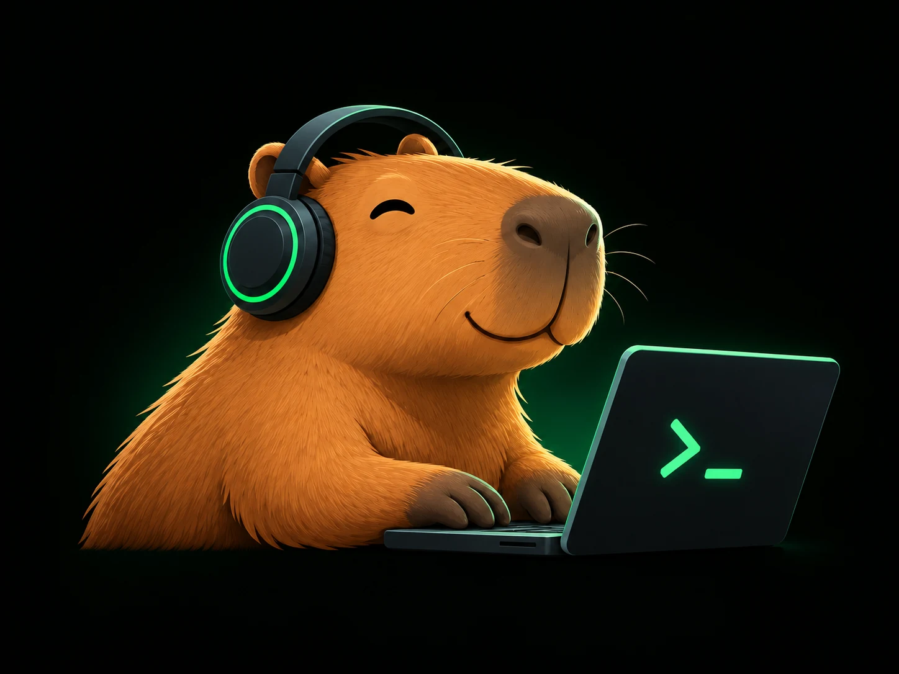
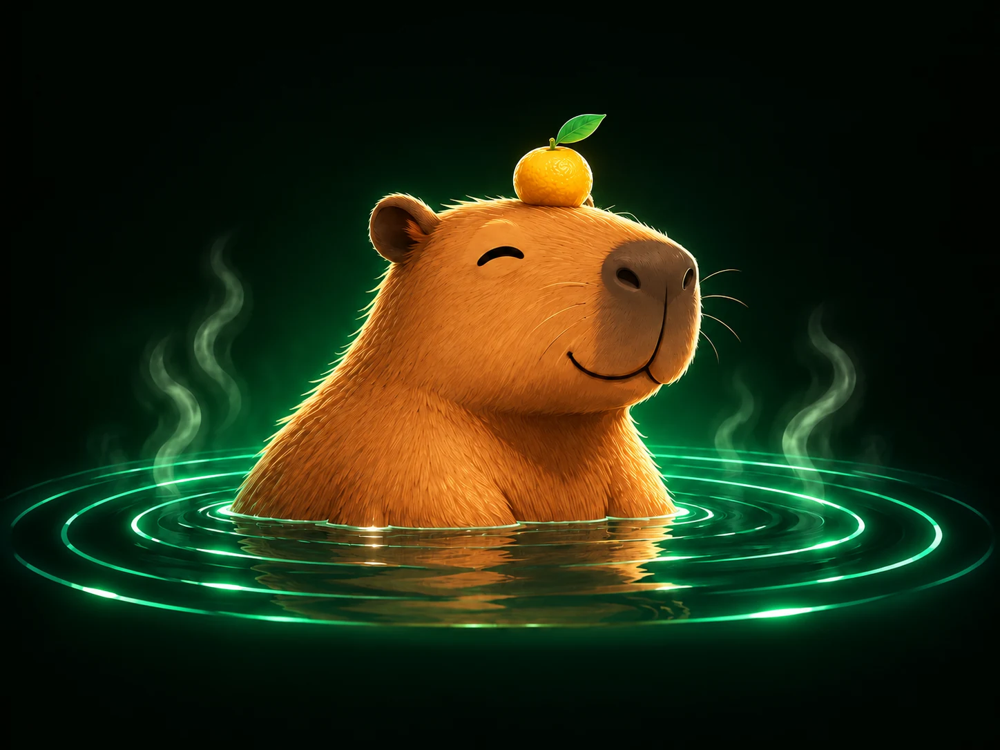

5 Whys
Keep asking why until the symptom gives way to a cause worth investigating.
A calm place to untangle a difficult problem. Follow the evidence, explore possible causes and find your next useful step — at your own pace, on your own device.

Start with the shape of the problem. We’ll point you to a useful first technique.
Open a Case File when you want to work. Read the Field Guide when you want to understand the method first.
Keep asking why until the symptom gives way to a cause worth investigating.
Organize possible causes before the team chases the loudest theory.
Focus effort on the relatively small number of causes creating most of the impact.
Make complex decisions explicit: requirements first, weighted preferences next, risk before commitment.
Private Session, local browser storage, and portable .problemme files. See what problem.me stores, what it does not receive, and what you should never paste into a workspace.

Bring one tangled problem. Explore it with 5 Whys, Fishbone and Pareto, connected by a shared Evidence Ledger.
Starts a Private Session. Save locally or export a .problemme file when you choose.
“The water is warm. Your first explanation is still a hypothesis. Before diving in: what happened, what did you expect, and what evidence would change your mind?”